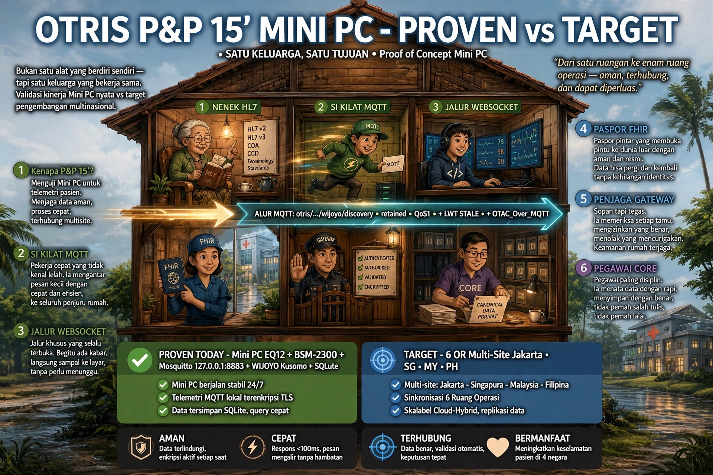

The OTRIS Constitution: Arsitektur, Tata Kelola, dan Tanggung Jawab
Ketika Teknologi Membutuhkan Landasan

Kategori: Books & Ideas
Media: OTRIS Media
Tema: Konstitusi Teknologi dan Rekayasa Sistem Kesehatan
Ketika Teknologi Membutuhkan Landasan
Kemajuan teknologi kesehatan sering diukur melalui kemampuan perangkat, kecepatan pemrosesan data, kecanggihan perangkat lunak, atau banyaknya fitur yang tersedia.
Namun, ada pertanyaan yang tidak kalah penting: siapa yang bertanggung jawab ketika berbagai teknologi tersebut dihubungkan menjadi satu sistem?
Sebuah rumah sakit dapat memiliki perangkat medis dari berbagai produsen, dengan protokol komunikasi, generasi teknologi, dan mekanisme pengoperasian yang berbeda. Mengintegrasikan semuanya bukan hanya persoalan menyambungkan kabel atau mengembangkan aplikasi.
Integrasi membutuhkan batas kewenangan, standar data, prosedur pengujian, pengendalian perubahan, serta kejelasan tanggung jawab manusia di belakang sistem.
Dari pemikiran inilah The OTRIS Constitution dibangun.
Mengapa OTRIS Membutuhkan Konstitusi?
OTRIS — Operating Theatre Real-time Integration Systems — dikembangkan dengan pendekatan menghubungkan teknologi yang telah tersedia, bukan menjadikan penggantian seluruh perangkat sebagai syarat utama integrasi.
Pendekatan tersebut menghadirkan tantangan rekayasa yang nyata.
Perangkat yang berbeda harus dapat dikenali, informasi yang diterima harus dapat dipahami, dan setiap perubahan dalam sistem harus dapat ditelusuri. Integrasi juga harus mempertimbangkan keamanan, keberlangsungan operasional, serta batas penggunaan data klinis.
The OTRIS Constitution berfungsi sebagai landasan untuk mengatur bagaimana keputusan arsitektur dibuat, bagaimana pekerjaan engineering dilaksanakan, bagaimana hasilnya diuji, dan bagaimana tanggung jawab dipertahankan sepanjang siklus hidup sistem.
Konstitusi ini bukan pengganti standar keselamatan, regulasi kesehatan, atau penilaian profesional klinis. Ia merupakan kerangka tata kelola internal yang harus berjalan selaras dengan kewajiban-kewajiban tersebut.
Prinsip yang Menjadi Fondasi
Arsitektur OTRIS dibangun di atas sejumlah prinsip yang saling berkaitan.
Integration Over Replacement menempatkan integrasi sebagai pilihan yang perlu dievaluasi sebelum mengganti infrastruktur yang masih dapat digunakan.
Vendor Agnostic berarti rancangan integrasi tidak semestinya bergantung secara eksklusif pada satu produsen perangkat.
Canonical First menekankan pentingnya representasi data yang konsisten agar informasi dari sumber yang berbeda dapat diproses melalui struktur yang terdefinisi.
Event Driven memandang perubahan status, pengamatan, dan aktivitas sistem sebagai peristiwa yang dapat diproses serta ditelusuri.
Local First dan Offline Capable menempatkan kemampuan operasional lokal sebagai pertimbangan penting, termasuk ketika koneksi ke layanan eksternal terganggu.
Audit First mengharuskan keputusan dan aktivitas penting memiliki jejak yang dapat diperiksa.
Prinsip-prinsip ini tidak berarti bahwa setiap perangkat otomatis kompatibel atau bahwa seluruh fungsi dapat diaktifkan tanpa validasi. Setiap integrasi tetap memerlukan pemeriksaan kemampuan perangkat, protokol, keamanan, dan kesesuaian penggunaannya.
Dari Perangkat Medis Menuju Arsitektur yang Terstruktur
Dalam rancangan OTRIS, perangkat di lingkungan operasi terhubung melalui lapisan integrasi yang memisahkan komunikasi perangkat dari pengolahan informasi dan antarmuka pengguna.
Salah satu komponen pentingnya adalah OTRIS Edge Gateway.
Gateway dirancang sebagai titik penghubung antara perangkat dengan protokol yang beragam dan layanan sistem yang menggunakan struktur data yang lebih seragam.
Perannya dapat mencakup penerimaan data, identifikasi perangkat, interpretasi protokol, pemetaan informasi, pengelolaan status koneksi, dan pengiriman peristiwa ke komponen berikutnya.
Namun, kemampuan tersebut harus dibedakan antara rancangan arsitektur, fungsi yang telah dikembangkan, dan fungsi yang telah dibuktikan melalui pengujian.
Dengan pemisahan ini, keberhasilan komunikasi dengan satu perangkat tidak langsung dianggap sebagai bukti kompatibilitas universal terhadap seluruh perangkat medis.
Tata Kelola Bukan Penghambat Inovasi
Dalam pekerjaan engineering, perubahan sering diperlukan. Perangkat baru ditemukan, protokol berbeda harus dipahami, atau suatu komponen membutuhkan penyesuaian.
Tanpa tata kelola, perubahan kecil dapat menghasilkan dampak yang sulit dilacak.
The OTRIS Constitution menempatkan perubahan dalam kerangka yang dapat dipertanggungjawabkan: kebutuhan harus dijelaskan, keputusan harus memiliki otoritas, implementasi harus diuji, dan hasilnya harus didokumentasikan.
Engineer bertanggung jawab menjalankan pekerjaan sesuai kewenangan dan prosedur yang ditetapkan. Persetujuan arsitektur dan keputusan strategis tetap berada pada otoritas yang ditentukan dalam tata kelola OTRIS.
Dalam lingkungan klinis, keputusan medis tetap menjadi kewenangan tenaga profesional yang berwenang. Integrasi teknologi tidak boleh disamakan dengan pengambilalihan keputusan klinis.
Konstitusi Sepanjang Siklus Hidup Sistem
The OTRIS Constitution Series disusun dengan cakupan yang melampaui perangkat lunak.
Rangkaian dokumennya membahas arsitektur, hardware, komponen, perakitan, produksi, pengujian, instalasi, panduan operasional, layanan perbaikan, pemeliharaan, keamanan, ketahanan sistem, pengalaman pengguna, ketertelusuran bukti, rantai pasok, dan peningkatan kualitas.
Cakupan tersebut mencerminkan satu pandangan penting: sebuah sistem teknologi tidak selesai hanya karena berhasil dinyalakan.
Sistem juga harus dapat dipasang dengan benar, diuji, dioperasikan, dirawat, diperbaiki, dan dievaluasi ketika terjadi kegagalan.
Penyusunan rangkaian konstitusi dilakukan secara bertahap, dengan status dokumen yang dibedakan antara yang telah disetujui dan yang masih dalam peninjauan pendiri.
Tanggung Jawab sebagai Dasar Kepercayaan
Kepercayaan terhadap teknologi kesehatan tidak cukup dibangun melalui demonstrasi kemampuan.
Kepercayaan membutuhkan bukti pengujian, kejelasan batas kemampuan, dokumentasi yang dapat diperiksa, serta kesediaan untuk mencatat kegagalan dan memperbaikinya.
Bagi OTRIS, konstitusi adalah upaya menempatkan tanggung jawab tersebut sejak tahap perancangan.
Sebuah sistem yang baik tidak hanya menjawab pertanyaan, apa yang dapat dilakukan teknologi ini?
Ia juga harus mampu menjawab:
Siapa yang mengizinkannya? Bagaimana kemampuan itu diuji? Apa yang terjadi ketika sistem gagal? Dan siapa yang bertanggung jawab untuk memperbaikinya?
Penutup: Membangun Jembatan yang Dapat Dipertanggungjawabkan
Integrasi teknologi kesehatan adalah pekerjaan membangun jembatan antara perangkat, informasi, manusia, dan institusi.
Jembatan tersebut harus lebih dari sekadar berfungsi. Ia harus memiliki struktur, aturan, batas kemampuan, serta mekanisme pemeliharaan yang jelas.
The OTRIS Constitution adalah landasan pemikiran untuk membangun jembatan tersebut secara terarah, dapat diperiksa, dan bertanggung jawab.
OTRIS Media — Books & Ideas
Artikel pengantar arsitektur dan tata kelola OTRIS. Bukan pernyataan sertifikasi, persetujuan regulasi, atau validasi klinis terhadap seluruh kemampuan sistem.
![Diagram alur arsitektur tata kelola perangkat OTRIS yang terbagi menjadi 5 tahap utama: 1. Device World (Patient Monitor, Anesthesia, Camera, dll), 2. Wijoyo Kusumo Workbench (discovery, capture data, parser & validasi), 3. Device Profile Immutable (profile.json), 4. Trust Authority (admission review & penandatanganan registry_attestation.json), dan 5. OTRIS Edge Agent (pemeriksaan lisensi/tanda tangan digital, keputusan Admit/Deny, serta runtime operation). Bagian bawah mencantumkan kosa kata teknis, kosa kata tata kelola, dan 7 prinsip arsitektur OTRIS.](assets/the-otris-constitution-arsitektur-tata-kelola-dan-tanggung-jawab-2.png)